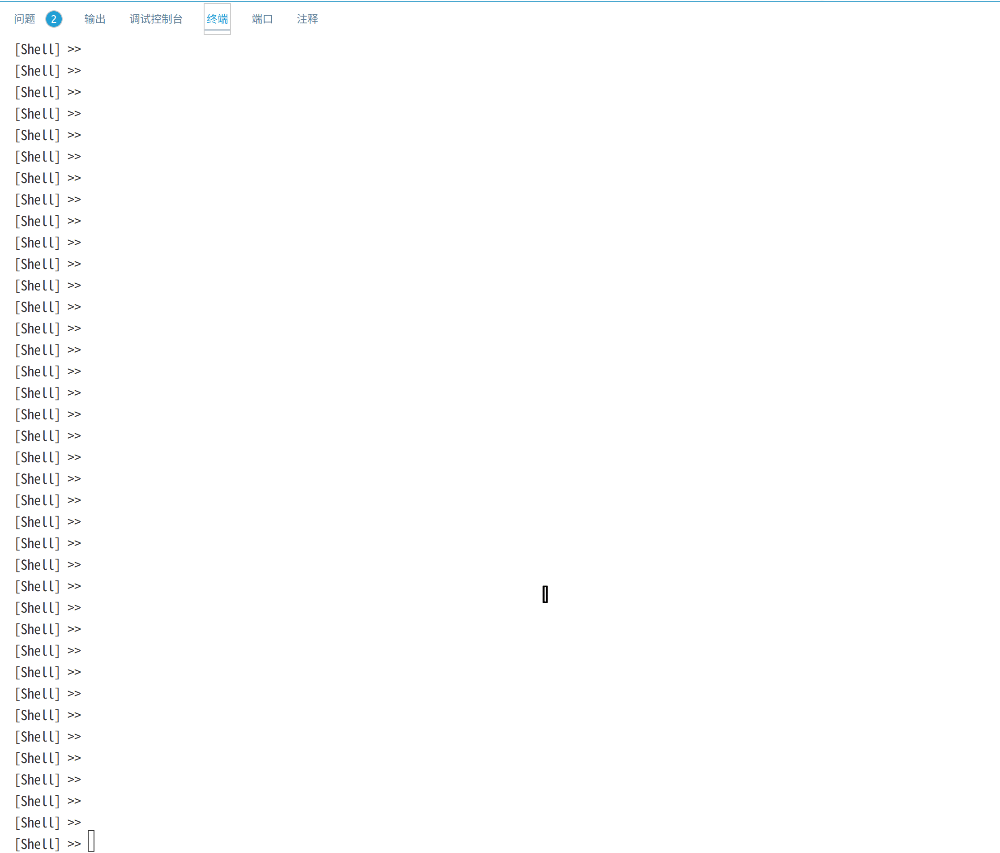
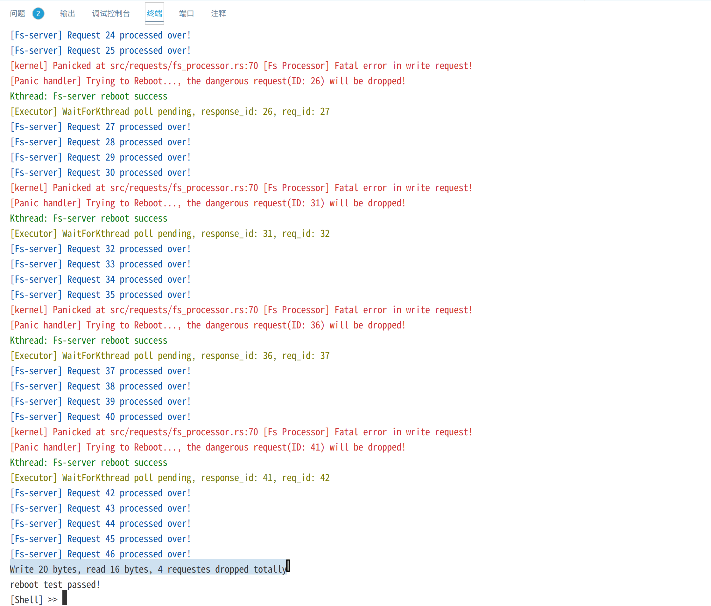
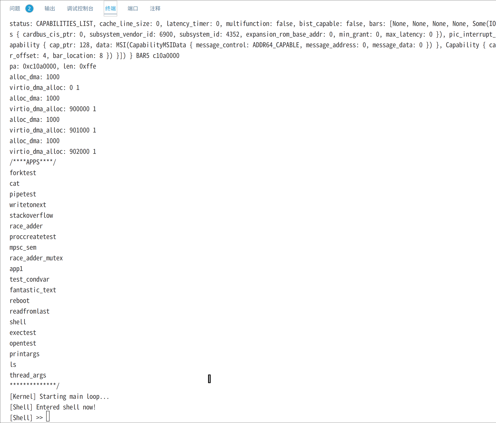
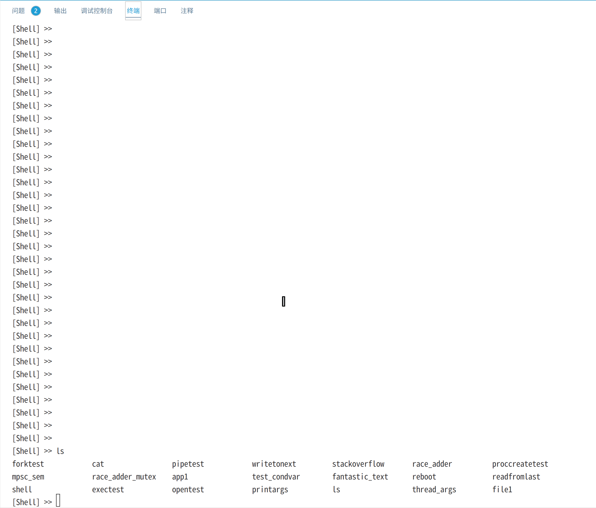

引言
设计目标
NUDT-OS的设计目标是探索不同的内核架构对于内核性能与安全可靠性的影响，并尝试设计一种架构来平衡二者。
一般来说，将所有内核功能都集成在内核态的宏内核具有很好的性能，但是安全性和稳定性较差，内核中任何一个模块出现故障（一般为低质量的驱动代码）都会导致内核崩溃。微内核为了解决这个问题，将非核心的内核服务移动到用户态以独立的用户进程提供，但这也带来了频繁的进程间通信开销导致的性能问题。关于宏内核与微内核的更具体的讨论，可以参考内核架构一节。
NUDT-OS为了综合宏内核和微内核的优点，权衡内核性能与可靠性，做了一些初步的尝试，具体来说：
-
NUDT-OS采用了一种融合宏内核与微内核特点和优点的融合内核架构。（在 内核架构中详细说明）
-
所有的内核服务都运行在内核态，但借鉴了微内核思想，将一些非核心的内核服务（如文件系统、部分设备驱动）运行于内核服务线程，各个内核服务线程保持相对独立，单个内核服务线程崩溃时，系统整体不会崩溃。（在内核服务线程中详细介绍）
-
借助Rust的无栈异步协程，实现多对多线程模型，一个协程执行器内核线程服务多个用户线程（执行调度）。而其他多个内核线程完成具体的服务。（具体参见异步管理）
完成情况
在内核中，具有任务管理、内存管理、文件系统、异步管理等模块。支持管道、命令行参数、重定向；支持信号量、互斥锁、条件变量等。下面的表格简要概述了各个模块的功能和特点。
| 模块 | 功能和特点 |
|---|---|
| 任务管理 | 具有进程、内核线程、用户线程三种对象 内核统一调度内核线程和用户线程 采用 多对多线程模型,一个协程执行器内核线程服务多个用户线程支持互斥锁、信号量、管道等进程间通信 |
| 内存管理 | 每个进程有独立的地址空间 切换进程时切换地址空间 所有 用户线程共享内核栈 |
| 文件系统 | 一个简易的文件系统 一切皆文件,将多种对象都抽象为文件 实现管道,命令行参数,重定向 |
| 异步管理 | 利用协程实现多个异步系统调用 利用协程实现多对多线程模型 |
| 内核服务线程 | 每个内核服务线程执行一种特定服务 用户通过系统调用向内核服务线程发送请求并获得服务 内核服务线程崩溃时系统保持稳定，并可以 重启恢复内核线程 |
目前内核提供了一组基础的系统调用，我们仍在继续添加更多的驱动程序支持与系统调用：
- 任务管理类：
- fork：复制当前进程
- exec：当前进程加载可执行文件
- waitpid：等待子进程结束并回收子进程资源
- getpid：获取进程号
- gettid：获取线程号
- thread_join：等待线程结束
- thread_create：创建用户线程
- kthread_req：向内核线程发送请求
- thread_exit：线程退出
- proc_eixt：进程退出
- sleep：线程睡眠
- yield：线程放弃CPU，主动调度
- get_time：获取系统时钟数
- 文件类：
- dup：复制文件描述符
- open：打开文件
- close：关闭文件
- pipe：创建管道
- read：从文件读取
- write：向文件写入
- 同步互斥：
- mutex_create：创建互斥锁
- mutex_lock：互斥锁上锁
- mutex_unlock：互斥锁解锁
- semaphore_create：创建信号量
- semaphore_up：增加信号量资源
- semaphore_down：减少信号量资源
- condvar_create：创建条件变量
- condvar_wait： 当前线程阻塞条件变量
- condvar_signal： 唤醒条件变量阻塞的线程
文档的说明
在这个文档中，我们主要说明内核设计中的主要思想和设计原则，以逐步揭示内核的整个架构和运行过程，必要时我们会讨论内核数据结构的设计，但不会对所有代码进行详细说明。
设计原则
一对一线程模型与多对多线程模型
-
一对一线程模型映射每个用户线程到一个内核线程，每个内核线程都有独立的内核栈，这样的设计是为了能够在一个用户线程执行阻塞系统调用时（比如读磁盘）将内核态上下文保存在自己的内核栈上从而调度另一用户线程执行，以此提高了内核的运行效率。Linux，Windows操作系统家族都采用了这种线程模型。这样做的缺点是由于用户线程的数量很多，系统往往必须限制内核线程的数量或者减小内核线程栈的大小。而且内核线程栈的上下文切换带来了一定的开销。
-
多对多线程模型复用多个用户线程到同样或更少数量的内核线程。同样允许在一个用户线程阻塞系统调用时调度另一个用户线程。
实际上线程模型本质上是解决阻塞式系统调用时线程内核态现场如何保存的问题。Rust的无栈协程机制为内核线程模型设计带来了一种新的解决方案：
-
用户线程执行阻塞系统调用时可以创建一个协程并直接返回，并将自己设置为异步等待状态，这时内核调度器不会再调度此线程。
-
内核中的协程执行器会不断执行所有的协程，当协程执行完毕后，唤醒等待状态的内核线程，此时他们可以被调度器调度。
在上面的过程中好像并没有涉及到线程内核态上下文的保存。但实际上原本保存在内核栈上的上下文被Rust编译器保存在了协程的上下文里（在内核堆上）。如此我们便避免了使用内核线程。实际上Rust协程的上下文切换开销要小于使用内核栈的开销。所以总结起来，使用Rust异步协程有以下两个好处：
- 节省空间，不必为用户线程创建独立的内核栈
- 一定程度上避免了上下文切换开销
在内核设计中首次使用Rust的异步协程机制的是由清华大学的zcore项目，我们的协程执行器和协程设计参考借鉴了zcore的实现。
内核线程设计
在引言中中我们简要地讨论了宏内核和微内核设计模式的优劣：
-
宏内核由于紧耦合，存在系统易崩溃、难以维护拓展的问题，但性能极好
-
微内核牺牲了部分性能来实现安全性和高度模块化
希望平衡内核性能与安全性，我们选择了一个折衷的方案：混合内核：
-
类似微内核将非核心的内核服务运行在独立的内核线程（内核态）中。每个内核线程保持独立性，有自己的内核栈，每个内核线程完成一个特定的服务。用户线程通过系统调用的方式来请求内核线程服务。若某个内核线程出现错误，内核不会崩溃，而可以重启内核线程来重新服务。
-
不同于微内核将多种服务放在用户态，将其运行在内核线程中的好处是内核线程共享内核地址空间，从而可以直接通信而不需要频繁的IPC。
我们将在后面的各章节中逐渐地具体说明上面两个原则的实现与好处。
内核架构
本章首先简要介绍传统操作系统宏内核和微内核架构的设计理念和优劣，再介绍NUDT-OS的内核架构设计。
传统宏内核架构
以Linux为代表的宏内核架构将所有功能模块（文件系统、网络栈、设备驱动等）都集成在内核态中运行。宏内核的优势在于其性能极好，软硬件生态丰富。但缺点也十分明显：一是可靠性问题，由于用户服务与内核服务都运行在内核态中，且内核各个组件的高度耦合性，任何一个模块的缺陷都可能导致整个系统的崩溃；二是内核的可维护性和可拓展性差，这同样是源于内核模块的高度耦合。
传统微内核架构
以Minix、seL4、Zircon等为代表的微内核架构则采用与宏内核完全不同的设计原则，将内核中的各个功能模块尽可能从内核中剥离，并作为独立的服务进程运行在用户态。相比于宏内核，微内核更小，高度模块化，具有更高的可靠性与安全性，单一模块的缺陷无法传播至其他模块，但缺点同样显著：内核外组件间的基于进程间通信的交互方式显著会影响系统性能。
混合内核架构
以Windows NT、macOS\IOS、鸿蒙系统为代表的混合内核融合多种内核特性。试图寻找系统性能与安全可靠性之间的折衷。 Windows NT融合了宏内核的性能、生态优势，以及微内核的可靠性优势，将部分与性能、安全相关的功能模块下沉到内核中，以内核线程的形式解决性能问题； macOS因兼容性问题保留了微内核，但为了提高系统性能增加宏内核，用户可通过不同的系统调用决定使用哪个内核； 鸿蒙为适配不同硬件平台特性，支持在不同硬件平台选择不同内核。
NUDT-OS内核架构
NUDT-OS旨在从类UNIX宏内核出发，吸收学习微内核设计思想，以追求系统性能与可靠安全之间的平衡。
-
针对传统宏内核的安全性问题，NUDT-OS将非核心的系统服务放在相互独立的内核线程中运行以增强系统安全可靠性，所有内核线程共享地址空间，由Rust语言特性保证线程间的访存隔离性。
-
针对微内核频繁IPC导致的性能问题，NUDT-OS的内核线程共享地址空间，不同线程间可以直接通信，避免了IPC开销。
总体内核架构图如下：

NUDT-OS中存在多个用户线程和多个内核线程：
-
内核主线程负责处理同步系统调用和分发用户线程的请求（异步系统调用）并执行调度
-
内核中的多个内核服务线程为用户提供文件系统、设备驱动等服务，他们保持相对独立，每个都有自己的特定任务
-
内核协程执行线程调度用户线程请求产生的协程，在服务完成时唤醒对应的用户线程
-
多个用户线程在用户空间执行，和宏内核类似，通过系统调用向内核服务线程提供服务
由此可见，实际上我们实现了一个多对多线程模型。
内存管理
内存管理是操作系统最基础的模块，是实现进程地址隔离和用户内核隔离的基础。
对于内存管理，我们没有使用任何新的技术，与传统宏内核一样，利用硬件的四级页表机制和OS协作提供地址空间隔离，所以本章我们简述内存管理模块的重要结构和方法而不会详细展开。
内存分配器
本节介绍堆内存分配器和物理页帧分配器
物理页帧分配
/// 使用bitmap_allocator库定义全局BIT_ALLOCATOR
static BIT_ALLOCATOR: Mutex<BitAlloc256M> = Mutex::new(BitAlloc256M::DEFAULT);
/// 初始化页帧分配器
pub fn init(memory_regions: &'static mut MemoryRegions) {
let mut ba = BIT_ALLOCATOR.lock();
println!("[Kernel] Memory regions:");
for region in memory_regions.into_iter() {
println!(" {:x?}", region);
if region.kind == MemoryRegionKind::Usable {
let start = region.start as usize;
let end = region.end;
let start_frame = start as usize / PAGE_SIZE;
let end_frame = end as usize / PAGE_SIZE;
ba.insert(start_frame..end_frame);
}
}
}
impl PhysFrame {
/// 分配一个物理页帧
pub fn alloc() -> Option<Self> {
allocate_frame().map(Self)
}
}
impl Drop for PhysFrame {
/// drop时释放掉物理页帧占的位
fn drop(&mut self) {
deallocate_frame(self.0);
}
}
我们使用了一个基于位图实现的物理页帧分配器，利用bootloader启动后传入的内存区域信息初始化位图。
物理页帧由内核显式地分配，需要一个新的页帧时使用alloc()方法分配，而由编译器隐式地释放，释放时调用drop()方法，释放掉页帧对应的bit。
堆内存分配
use buddy_system_allocator::Heap;
struct LockedHeap(Cell<Heap<32>>);
#[global_allocator]
static HEAP_ALLOCATOR: LockedHeap = LockedHeap(Cell::new(Heap::new()));
我们使用了一个带伙伴系统的堆内存分配器（来自第三方库），使用#[global_allocator]将其注册为全局堆内存分配器。
#[global_allocator]
static HEAP_ALLOCATOR: LockedHeap<32> = LockedHeap::empty();
#[alloc_error_handler]
pub fn handle_alloc_error(layout: core::alloc::Layout) -> ! {
panic!("Heap allocation error, layout = {:?}", layout);
}
static mut HEAP_SPACE: [u8; KERNEL_HEAP_SIZE] = [0; KERNEL_HEAP_SIZE];
pub fn heap_init() {
unsafe {
HEAP_ALLOCATOR
.lock()
.init(HEAP_SPACE.as_ptr() as usize, KERNEL_HEAP_SIZE);
}
}
为其实现了GlobalAlloctrait后，内核中即可使用动态内存结构，而具体内存分配和释放是由Rust编译器插入代码来实现的。
页表
本节介绍NUDT-OS中的页表抽象。
页表
/// 页表
#[derive(Default)]
pub struct PageTable {
/// 4级页表的起始物理地址
root_pa: usize,
/// 四级页表对应的四个物理页帧
frames: Cell<Vec<PhysFrame>>,
}
页表结构体PageTable中包含了四级页表首地址，和一张四级页表使用的几个物理页帧（最多为4个）。
内核运行时，cr3寄存器中存放四级页表的起始物理地址，硬件的MMU模块寻址虚拟地址时会从cr3寄存器中取出页表地址并查询，最终转换得虚拟地址的物理地址。进程切换时，将cr3寄存器载入自己的页表的起始物理地址即实现了地址空间切换。
想要实现每个用户进程拥有独立的地址空间（也就是说每个进程有独立的虚拟地址到物理地址的映射，每个进程都可以使用相同的虚拟地址但是映射到不同的物理地址），我们只需要为每个进程创建一个独立的页表进行映射并保证每个物理地址不会被多次映射即可。
x64架构中虚拟地址的各字段含义和地址翻译过程见下图：
将上图中的地址翻译过程用Rust表示如下。

/// 从虚拟地址获取四级页表索引，cr3中存四级页表首地址
///
/// 按这个索引取出的是三级页表首地址
const fn p4_index(va: usize) -> usize {
(va >> (12 + 27)) & (ENTRY_COUNT - 1)
}
/// 从虚拟地址获取三级页表索引
const fn p3_index(va: usize) -> usize {
(va >> (12 + 18)) & (ENTRY_COUNT - 1)
}
/// 从虚拟地址获取二级页表索引
const fn p2_index(va: usize) -> usize {
(va >> (12 + 9)) & (ENTRY_COUNT - 1)
}
/// 从虚拟地址获取一级页表索引
const fn p1_index(va: usize) -> usize {
(va >> 12) & (ENTRY_COUNT - 1)
}
/// 获取一个虚拟地址的四级页表项，可能创建低级页表
fn get_entry(paddr: usize, va: usize) -> &'static mut usize {
let p4 = as_table(paddr);
let p4e = &mut p4[p4_index(va)];
let p3 = next_table_or_create(p4e);
let p3e = &mut p3[p3_index(va)];
let p2 = next_table_or_create(p3e);
let p2e = &mut p2[p2_index(va)];
let p1 = next_table_or_create(p2e);
let p1e = &mut p1[p1_index(va)];
p1e
}
最终实现页表的map和unmap方法，以将一对虚拟地址，物理地址映射关系写入页表
/// 映射一个虚拟地址到一个物理地址，写入页表
impl PageTable {
pub fn map(&mut self, va: VirtAddr, pa: PhysAddr, flags: PageTableFlags) {
let entry = self.get_entry_or_create(va).unwrap();
if !entry.is_unused() {
panic!("{:#x?} is mapped before mapping", va);
}
*entry = PageTableEntry::new_page(pa.align_down(), flags);
}
/// 取消映射一个虚拟地址，清除页表
pub fn unmap(&mut self, va: VirtAddr) {
let entry = get_entry(self.root_pa, va).unwrap();
if entry.is_unused() {
panic!("{:#x?} is invalid before unmapping", va);
}
entry.0 = 0;
}
}
地址空间
本节介绍虚拟地址空间和虚拟内存区域，虚拟地址空间由一张页表和若干虚拟内存区域组成。虚拟内存区域指的是在虚拟地址上连续的一段区域。
虚拟内存区域
/// 虚存区域
pub struct MemoryArea {
/// 起始虚地址
start_vaddr: usize,
/// 虚拟内存区域长度
size: usize,
/// 映射标识
flags: PageTableFlags,
/// 映射关系
mapper: Cell<HashMap<usize, PhysFrame>>,
}
MemoryArea指的是一段连续的虚拟内存区域（比如一个栈空间），而物理内存并不一定连续，共用同一组映射标记。mapper存放了这段区域中所有虚拟页面到物理页帧的映射关系。
impl MapArea {
/// 获取一个虚地址映射的物理页帧，若没有则分配一个页帧
pub fn map(&self, vaddr: usize) -> usize {
assert!(is_aligned(vaddr));
match self.mapper.get_mut().entry(vaddr) {
Entry::Occupied(e) => e.get().0,
Entry::Vacant(e) => e.insert(PhysFrame::alloc_zero().unwrap()).start_paddr(),
}
}
/// 取消映射一个虚地址
pub fn unmap(&self, vaddr: usize) {
self.mapper.get_mut().remove(&vaddr);
}
}
impl Clone for MemoryArea {
/// 克隆一块虚存区域，重新分配所有页帧
fn clone(&self) -> Self {
let mut mapper = Cell::new(HashMap::new());
for (&vaddr, frame) in self.mapper.get() {
let new_frame = PhysFrame::alloc().unwrap();
new_frame.as_slice().copy_from_slice(frame.as_slice());
mapper.insert(vaddr, new_frame);
}
Self {
start_vaddr: self.start_vaddr,
size: self.size,
flags: self.flags,
mapper,
}
}
}
映射虚拟内存时，可能会分配物理页帧。取消映射时，编译器会自动帮我们调用物理页帧的drop方法，释放之前分配的位。
在使用fork时，子进程复制父进程地址空间，这会复制地址空间中的所有内存区域，clone方法简单的复制所有已经映射的虚拟地址，但是为他们分配新的物理页帧，并且将原物理页帧中的数据复制到新的物理页帧中去。
/// 映射一段虚拟内存区域，映射关系写入页表
impl PageTable{
pub fn map_area(&mut self, area: &mut MapArea) {
assert!(area.start.0 + area.size < PHYS_OFFSET);
let mut va = area.start.0;
let end = va + area.size;
while va < end {
let pa = area.map(VirtAddr(va));
self.map(VirtAddr(va), pa, area.flags);
va += PAGE_SIZE;
}
}
}
当使用页表的map_area方法时，将映射关系写入页表。
虚拟地址空间
/// 进程地址空间
#[derive(Default)]
pub struct MemorySet {
/// 地址空间包含的虚存区域
areas: Cell<Vec<Arc<MemoryArea>>>,
/// 页表
page_table: Arc<Cell<PageTable>>,
}
地址空间包含一张页表和若干内存区域。
impl MemorySet {
/// 地址空间中插入一段内存区域
pub fn insert(&mut self, area: MapArea) {
if area.size > 0 {
if let Entry::Vacant(e) = self.areas.entry(area.start) {
// 映射关系写入页表
self.pt.map_area(e.insert(area));
} else {
panic!(
"MemorySet::insert: MapArea starts from {:#x?} is existed!",
area.start
);
}
}
}
/// 从页表中清除地址空间中所有内存区域的映射关系
pub fn clear(&mut self) {
for area in self.areas.values_mut() {
self.pt.unmap_area(area);
}
self.areas.clear();
}
/// 将自己的页表首地址写入cr3寄存器
pub fn activate(&self) {
my_x86_64::set_cr3(self.pt.root_pa.0);
}
}
向内存区域插入insert一个内存区域时，将映射关系写入这个地址空间对应的页表。clear方法清除地址空间中所有内存区域的映射关系，并清除页表中所有对应的页表项。‘
activate方法将自己的四级页表起始物理地址写入Cr3寄存器，这就完成了地址空间的切换，在切换到一个新进程时，首先需要切换其地址空间。
impl Drop for MemorySet {
/// 释放时清除所有内存区域
///
/// 从页表中清除映射关系
fn drop(&mut self) {
self.clear();
}
}
impl Clone for MemorySet {
/// 克隆地址空间，即克隆其包含的所有连续内存区域
fn clone(&self) -> Self {
let mut ms = Self::new();
for area in self.areas.values() {
ms.insert(area.clone());
}
ms
}
}
MemorySet释放时，不仅要回收其内存，还需要调用clear方法清除页表项，释放分配的物理页帧对应的位。克隆地址空间时，首先克隆原地址空间的所有内存区域，再插入到新的地址空间中。
任务管理
NUDT-OS中包含进程、用户线程、内核线程三种对象，进程与宏内核类似，而用户线程和内核线程有一些区别：
-
用户线程没有独立的内核栈，用户线程包含了一组协程的唤醒器
-
每个内核线程都有独立的内核栈，且执行一个特定的任务，有独立的入口
下面各节具体说明这三种数据结构，最后再说明调度器是如何统一调度用户线程和内核线程的。
进程管理
进程是OS资源分配的最小单位，NUDT-OS中使用Process结构体表示进程。
在设计进程时，我们基本上采用和宏内核相同的设计，每个用户进程有独立的地址空间，并维护独立的内核资源，进程中包含的多个用户线程共享进程的所有资源。
数据结构
// kernel/src/task/process.rs
/// 进程抽象
#[derive(Default)]
pub struct Process {
/// 进程id
pid: usize,
/// 进程名称，可重复
name: String,
/// 进程地址空间
memory_set: Arc<MemorySet>,
/// 父进程
parent: RwLock<Weak<Process>>,
/// 子进程队列
children: Cell<Vec<Arc<Process>>>,
/// 进程包含的线程集合，TID到线程对象的映射
threads: Cell<HashMap<usize, Arc<Thread>>>,
/// 线程ID，创建新线程时分配
thread_id: AtomicUsize,
/// 文件表
file_table: Cell<Vec<Option<Arc<dyn File>>>>,
/// 互斥锁
mutexes: Cell<Vec<Arc<MutexBlocking>>>,
/// 信号量
sems: Cell<Vec<Arc<Sem>>>,
/// 条件变量
condvars: Cell<Vec<Arc<Condvar>>>,
}
每个进程持有一个虚拟地址空间的指针Arc<MemorySet，这是进程间地址隔离的关键。每个虚拟地址空间都采用独立的一张页表，所以多个进程中的数据可能有同样的虚拟地址但是映射到不同的物理地址。
创建和使用进程
Unix的简单设计哲学将创建一个进程分成两个简单的步骤：即fork、exec两个经典的方法。fork()复制当前进程的地址空间和所有资源，而exec()为新进程加载一个用户程序执行。
我们遵循了Unix的使用方式，fork()和exec()结合使用来实现进程的创建和使用
fork()
fork()复制当前进程并创建一个新线程，若当前进程有多个线程，只复制当前线程。
/// 复制当前进程
///
/// 若当前进程有多个线程，只复制当前线程
///
/// 返回（子进程指针， 子进程id）
pub fn fork(&mut self) -> (Arc<Self>, usize) {
let current_thread = CURRENT_THREAD.lock();
// 复制当前进程的地址空间(栈空间没复制)
let child_memory_set = self.vms().self_clone();
// 复制栈空间
...
// 创建子进程
...
// 创建子进程的根线程
...
// 复制当前线程的UserContext
let root_thread_user_context = &mut root_thread.user_context();
*root_thread_user_context = current_ctx;
// 子线程的返回值为0
root_thread.user_context().general.rax = 0;
child_proc.insert_thread(root_thread);
self.add_child(child_proc.clone());
(child_proc, child_pid)
}
- 复制当前进程的所有资源包括地址空间、文件表、互斥锁等。
- 子进程创建自己的主线程
- 子进程主线程将会复制当前线程的
UserContext，这里的UserContext中存放的是线程在用户态中的上下文，子进程在进入用户态之前会从其中恢复用户态现场，在用户线程中有更详细的说明
这样当子进程的主线程被调度执行时将会从当前线程进行系统调用前的上下文开始执行，下面给出了一个用户程序使用fork()的简单示例
// An example in user program
let pid = fork();
// 子进程的根线程进入用户态后从这里开始运行
if pid == 0 {
// 子进程
println!("I am child {}", i);
exit(0);
} else {
// 父进程
println!("I am parent, forked child pid = {}", pid);
}
exec()
exec()从文件系统中加载一个elf文件，将其装载到进程的地址空间中。
/// 使用新的elf替换当前进程的elf
pub fn exec(&self, new_name: String, elf_data: &[u8], args: Option<Vec<String>>) -> usize {
trace!("[Kernel] start exec {}", new_name);
// 清理运行exec之外的其他所有子线程
...
// 清理原ELF类型的虚存块
...
// 载入elf到虚存空间
let elf = ElfFile::new(elf_data).unwrap();
parse_elf(Arc::downgrade(&self.vms), &elf);
let entry = elf.header.pt2.entry_point() as usize;
// 准备根线程的栈虚存块
...
// 参数压到用户栈
let sp_offset = push_to_stack(thread_stack_pfg, args);
let root_sp = sp_offset + USER_STACK_BASE;
let root_ip = entry;
// 设置线程的用户态上下文
current_thread.test_set_ip(root_ip);
current_thread.test_set_sp(root_sp);
threads_lock.insert(current_thread.tid(), current_thread);
root_sp
}
- 读取elf文件，创建虚拟地址空间，将elf文件中的各个section加载到内存空间中
- 命令行参数处理，将其放在用户栈上
- 初始化进程的
UserContext结构，将程序入口点，栈顶，参数等写入其用户态上下文中，进程进入用户态之前就会取出这些上下文恢复寄存器
结合使用fork和exec就可以实现用户态的shell程序，下面是一个简易的结构示意：
// An example of shell
let pid = fork();
// 子进程
if pid == 0 {
// 执行应用程序
if exec(args_copy[0].as_str(), args_addr.as_slice()) == -1 {
println!("Error when executing!");
return -4;
}
unreachable!();
// 父进程
} else {
children.push(pid);
}
用户线程管理
线程是OS进行调度的最小单位，每个线程都有自己的指令执行流。
NUDT-OS使用Thread结构体表示用户线程。在前面我们提到Rust异步协程机制可以实现用户线程无独立的内核栈。
数据结构
// kernel/src/task/thread.rs
pub enum ThreadState {
/// 可运行
Runnable,
/// 异步等待
Waiting,
/// 被调度
Suspended,
/// 已退出, 可以被回收
Exited,
}
线程具有四种状态，状态转移图如下所示：

Waiting状态表示线程正在等待某个事件，一般发生在异步系统调用（即线程需要等待某个事件发生才能继续执行）时，内核主线程将会创建一个协程将其添加到协程执行线程中，用户线程转为异步等待状态，当线程等待的事情发生时，唤醒用户线程，则再次转为可运行态。我们在后面的章节中会逐渐看到这整个过程。
Suspended状态表示线程的时间片用尽了，暂时被剥夺CPU，发生在时钟中断时。
// 时钟中断，轮转用户线程或内核线程
TIMER => {
pic::ack();
*pic::TICKS.get_mut() += 1;
// 用户时钟
if let Some(thread) = thread {
// 时间片轮转
thread.set_state(ThreadState::Suspended);
// 内核时钟
} else if let Some(_tf) = tf {
// 当前内核线程主动调度
Scheduler::yield_current_kthread();
} else {
panic!("Should never happen!");
}
}
/// 用户线程
///
/// 用户线程共享内核线程栈
pub struct Thread {
/// 线程id
tid: usize,
/// 线程所属进程
proc: Weak<Process>,
/// 线程状态
state: Cell<ThreadState>,
/// 线程执行的用户态上下文
user_context: Cell<Box<UserContext>>,
/// 栈内存区域
#[allow(unused)]
stack_area: Arc<MemoryArea>,
/// 状态改变时的唤醒器
state_wakers: Cell<Vec<(Waker, ThreadState)>>,
}
-
user_context成员代表了用户线程的用户态上下文，线程进入用户态时将会从其中弹出上下文（通用寄存器，包括rip和rsp），而用户线程系统调用陷入内核时将用户态上下文保存在user_context上 -
state_wakers成员包含了一个由线程状态和唤醒器构成的队列。当线程状态发生改变时，有可能唤醒某个正在等待这个状态的协程。比如说一个进程的主线程正在等待这个进程中的其他几个线程结束以回收（主线程为Waiting状态），这时子线程转为Exit状态时就可能会唤醒主线程（这个具体的过程在异步系统调用中） -
可以看到，每个用户线程都有自己的用户栈
stack_area，而没有独立的内核栈
UserContext结构表示用户态上下文，其来自rcore社区提供的TrapFrame库，这个库实现了线程由内核态以指定的上下文进入用户态和用户态发生系统调用时陷入内核这两个过程的汇编代码。
具体的过程比较复杂，这里不作展开，我们只需要知道用户线程在从内核态进入内核时，从UserContext结构中恢复用户态现场，在陷入内核时，将用户态现场保存在其中即可。
/// In TrapFrame
pub struct UserContext {
pub general: GeneralRegs,
pub trap_num: usize,
pub error_code: usize,
}
/// 所有通用寄存器
pub struct GeneralRegs {
pub rax: usize,
pub rbx: usize,
pub rcx: usize,
pub rdx: usize,
...
}
创建和使用线程
创建用户线程: new()
kernel/src/task/thread.rs
/// 创建线程，返回tid
pub fn sys_thread_create(entry: usize, arg1: usize, arg2: usize) -> (usize, usize) {
let current_thread = CURRENT_THREAD.get().as_ref().unwrap().clone();
let current_proc = current_thread.proc().unwrap();
let tid = current_proc.alloc_tid();
// 每两个用户栈之间隔一段空间
let sp_base = USER_STACK_BASE + tid * 2 * USER_STACK_SIZE;
let flags =
PageTableFlags::WRITABLE | PageTableFlags::PRESENT | PageTableFlags::USER_ACCESSIBLE;
// 分配用户栈
let stack_area = MemoryArea::new(sp_base, USER_STACK_SIZE, flags);
// 插入到当前进程所在的地址空间中
let current_memoryset = current_proc.memory_set();
current_memoryset.insert_area(stack_area.clone());
let new_thread = Thread::new(
Arc::downgrade(¤t_proc),
tid,
entry,
sp_base + USER_STACK_SIZE,
arg1,
arg2,
stack_area,
);
new_thread.set_state(ThreadState::Runnable);
current_proc.add_thread(new_thread);
(tid, 0)
}
-
创建线程时提供其进入用户态的上下文，将其写入
user_context结构中去 -
创建线程前还要先为其创建一个独立的用户栈虚拟内存区域
运行用户线程：run_until_trap()
run_until_trap()方法切换到当前线程所在进程的地址空间，再使用自己的用户态上下文运行，直到发生系统调用或者中断时控制流才返回Rust。
/// 运行当前线程，当用户态发生中断或系统调用时控制流返回Rust
pub fn run_until_trap(&self) {
// 切换当前线程所属进程的地址空间
if let Some(proc) = self.proc.upgrade() {
proc.memory_set().activate();
// 刷新TLB
tlb::flush_all();
} else {
panic!("[Kernel] Process already dropped");
}
self.user_context.get_mut().run()
}
/// In TrapFrame
/// impl UserContext
pub fn run(&mut self) {
unsafe {
syscall_return(self);
}
}
利用rcore社区的TrapFrame库提供的UserContext的run()方法，使用当前的用户态现场进入用户态运行，直到遇到系统调用或者中断时返回内核。
与通常的做法不同，在用户态遇到中断和系统调用陷入内核时，控制流不是直接跳转到中断/系统调用处理函数，而是返回run()之后，所以我们需要手动进行系统调用或中断处理。
系统调用分发：do_syscall()
do_syscall方法从用户态上下文获取系统调用号和参数，并调用内核系统调用分发函数syscall()。
/// 线程执行系统调用
pub fn do_syscall(&self) {
let syscall_num = self.user_context.get_syscall_num();
let args = self.user_context.get_syscall_args();
// 执行系统调用
let (ret0, ret1) = syscall(syscall_num, args);
self.user_context.get_mut().set_syscall_ret(ret0, ret1);
}
这里的syscall是内核中的系统调用分发函数，根据系统调用号来分发到具体的处理过程
/// 系统调用总控函数
pub fn syscall(syscall_id: usize, args: [usize; 6]) -> (usize, usize) {
let syscall_id = num::FromPrimitive::from_usize(syscall_id).unwrap();
let ret = match syscall_id {
// 调试用
DebugWrite => sys_debug_write(args[0]),
DebugDataTransport => sys_debug_data_transport(args[0], args[1]),
DebugOpen => sys_debug_open(args[0]),
SerialRead => sys_serial_read(args[0]),
GetTime => (*pic::TICKS as _, 0),
// 任务相关
ProcExit => sys_proc_exit(args[0]),
...
};
ret
}
内核运行用户线程
/// 调度用户线程和内核线程
pub fn main_loop() {
println!("[Kernel] Starting main loop...");
loop {
// 优先运行内核线程
...
let uthread = Scheduler::get_first_uthread();
// 运行用户线程
if uthread.is_some() {
let uthread = uthread.unwrap();
// 修改当前线程
*CURRENT_THREAD.get_mut() = Some(uthread.clone());
// 持续运行用户线程直到其被挂起
while uthread.state() == ThreadState::Runnable {
uthread.run_until_trap();
handle_user_trap(uthread.clone(), &uthread.user_context());
}
// 此时线程已被挂起
clear_current_thread();
}
}
内核维护了一个用户线程列表，并不断选出就绪的内核线程运行，并处理用户线程的系统调用请求和中断。
内核线程管理
我们之前提到：内核线程的设计是为了权衡性能和系统安全性。
衡量操作系统很重要的指标便是其支持的硬件设备的数量。Linux支持了非常多的设备，但这也导致75%的内核源代码都是设备驱动程序，驱动程序质量有好有坏。在Linux这种宏内核中，驱动程序运行时其地位是与内核代码等价的，如果一个低质量的驱动程序崩溃了，那整个系统也就崩溃了。
微内核将非核心的内核服务移到用户态就是为了保证内核代码的安全，防止某个系统组件崩溃导致整个系统不可用。
我们对于内核线程的设计也是基于上面的考虑。本质上来说，我们认为内核线程中运行的代码是不完全可靠的，因此将其放在独立的受内核控制的内核线程中。当任意内核线程崩溃时，内核有能力重启这个线程。
每个内核线程都执行一个特定的内核服务，内核线程借助Rust语言的内存安全特性保持独立，任何一个内核线程故障不会导致内核本身直接崩溃。每个内核线程共享内核地址空间，当内核线程间需要通信时，相对于微内核，也不需要频繁的IPC开销。
我们在这一节介绍内核线程结构的成员和方法，在后面的内核线程服务模型一章中具体介绍几种内核线程。
Kthread
/// 内核线程状态
#[derive(Default, Debug, Clone, Copy, Eq, PartialEq)]
pub enum KthreadState {
#[default]
/// 空闲
Idle,
/// 有请求等待处理，需要运行
NeedRun,
}

内核线程只有两种状态，Idle表示空闲没有请求，而NeedRun表示尚有请求未处理完毕。
/// 内核线程的内核态现场
#[derive(Default)]
#[repr(C)]
pub struct KernelContext {
/// 被调用者保存寄存器
pub regs: CalleeRegs,
/// 内核线程入口现场
pub rip: usize,
}
KernelContext表示内核线程的内核态上下文，包含了x86中被调用者保存的寄存器和rip，当发生内核线程切换时，内核线程将自己的内核态上下文保存在context成员上，再从新内核线程的context成员中弹出上下文执行。
/// 内核线程的服务类型
#[derive(Default, PartialEq, Eq, Hash)]
pub enum KthreadType {
/// 文件系统服务
FS,
/// 块设备服务
BLK,
....
/// 执行器
EXECUTOR,
/// 根线程
ROOT,
/// 未指定
#[default]
UNKNOWN,
}
目前为止，内核中存在多种服务线程和一个执行器线程，一个根线程。
-
每个服务线程提供一中独立的服务，不断地处理自己的请求队列。
-
执行器线程是用于轮讯并执行内核中产生的所有协程，我们将在异步管理中详细说明
-
根线程执行系统调用分发、中断处理和调度
/// 内核线程
///
/// 每个内核线程有独立的内核栈
#[derive(Default)]
pub struct Kthread {
/// 内核线程ID
ktid: usize,
/// 内核线程名称
name: String,
/// 内核线程的内核态上下文
context: Box<KernelContext>,
/// 运行状态
state: Cell<KthreadState>,
/// 服务类型
#[allow(unused)]
ktype: KthreadType,
/// 用户请求的实际处理器
processor: Option<Arc<dyn Processor>>,
/// 请求队列
request_queue: Cell<VecDeque<(Request, usize)>>,
/// 请求的唤醒器队列
request_wakers: Cell<Vec<(Waker, usize)>>,
/// 最新的请求ID
request_id: Cell<usize>,
/// 已经响应的请求ID
response_id: Cell<usize>,
}
-
context成员表示内核线程的内核态上下文，注意和用户线程的UserContext区分， -
stack_vmb成员表示自己的内核栈虚存区域，每个内核线程栈都有独立的内核栈。 -
processor成员用于处理具体的请求，其是一个实现了Processortrait的结构体，因为每个内核线程的提供的服务不同，所以对于请求的处理过程也不同。使用不同的实现了Processor的结构体便可以我们将所有的内核线程都统一起来。 -
request_queue维护了内核线程收到的请求队列。 -
request_wakers维护了请求队列中请求的唤醒器，类似于用户线程维护的唤醒器，这里的唤醒器用于唤醒那些正在等待内核线程服务的线程（在异步管理中可以看到具体的例子）。
在内核线程服务模型一章中我们会详细说明几种内核线程对于Processor的实现。
/// 解析请求类型并进行具体地处理
pub trait Processor: Send + Sync {
/// 处理当前请求，完毕后唤醒相应的等待协程
fn process_request(&self, request: Request);
}
创建和使用内核线程
创建内核线程：new()
/// 创建内核线程
pub fn new(
name: String,
entry: usize,
processor: Option<Arc<dyn Processor>>,
ktype: KthreadType,
) -> Arc<Kthread> {
let ktid = KTHREAD_ID.fetch_add(1, Ordering::Relaxed);
// 两个线程栈之间空余一小段空间
let stack_base = KERNEL_STACK_BASE + ktid * KERNEL_STACK_SIZE * 2;
// 初始化内核现场
let mut context = KernelContext::default();
// 设置sp，ip
context.regs.rsp = stack_base + KERNEL_STACK_SIZE;
context.rip = entry;
// 创建新内核线程
let kthread = Arc::new(Kthread {
ktid,
name,
context: Box::new(context),
processor,
ktype,
..Kthread::default()
});
// 将内核线程放入全局线程队列
KTHREAD_DEQUE.get_mut().push_back(kthread.clone());
kthread
}
每个内核线程都有自己的内核栈，两个内核栈之间空余了一小段空间，这是防止栈溢出时破坏其他内核线程的栈。
创建新内核线程时，初始化线程入口点和栈基地址。
上下文切换：switch_to()
/// 切换到下一个内核线程
pub fn switch_to(&self, next: Arc<Kthread>) {
unsafe {
context_switch(&self.context, &next.context);
}
}
内核线程切换时需要保存他的内核态现场，将自己的上下文保存在KernelContext结构中，并从另一个内核线程的KernelContext中恢复内核态现场。
context_switch是一段内嵌汇编程序，其保存当前内核线程的上下文并弹出另一个内核线程的上下文执行。
.text
.global
context_switch: # (cur: &mut Context, nxt: &Context)
# cur.context_ptr in rdi, nxt.context_ptr in rsi
# Save cur's registers
mov rax, [rsp] # return address
mov [rdi + 56], rax # 56 = offsetof(Context, rip)
mov [rdi + 0], rsp
mov [rdi + 8], rbx
mov [rdi + 16], rbp
mov [rdi + 24], r12
mov [rdi + 32], r13
mov [rdi + 40], r14
mov [rdi + 48], r15
# Restore nxt's registers
mov rsp, [rsi + 0]
mov rbx, [rsi + 8]
mov rbp, [rsi + 16]
mov r12, [rsi + 24]
mov r13, [rsi + 32]
mov r14, [rsi + 40]
mov r15, [rsi + 48]
mov rax, [rsi + 56] # restore return address
mov [rsp], rax # for stack balance, must use mov instead of push
ret
内核线程入口函数
每个内核线程执行一项特定的内核服务，其入口函数是固定的，下面我们给出一个例子：
/// 服务内核线程统一入口，内部通过内核线程的
/// processor对象来具体处理请求
pub fn processor_entry() {
// 获取内核线程
let kthread = CURRENT_KTHREAD.get().as_ref().unwrap().clone();
// 获取请求处理器
let processor = kthread.processor();
assert!(processor.is_some());
let processor = processor.unwrap();
// 循环响应请求
loop {
// 获取请求
let (req, req_id) = match kthread.get_first_request() {
Some((req, req_id)) => (req, req_id),
None => {
// 请求队列为空，则设置自己为Idle，放弃CPU直到请求入队时改变状态为NeedRun
kthread.set_state(KthreadState::Idle);
Scheduler::yield_current_kthread();
continue;
}
};
// 处理请求
processor.process_request(req);
// 响应请求，唤醒等待协程
kthread.wake_request(req_id);
println!("[{}] Request {} processed over!", kthread.name(), req_id,);
}
}
这是所有内核服务线程的共用入口，可见内核服务线程不断地弹出请求队列中的请求，处理请求，而具体的请求处理过程是由自己的Processor对象实现的，完成处理后唤醒等待的用户线程。
任务调度
线程是CPU调度的最小单位，NUDT-OS中存在用户线程和内核线程两种线程，内核线程为用户线程提供服务，理论上应该具有更高的优先级。
内核必须统一调度内核线程和用户线程两种线程。目前采用的调度算法是当任意内核服务线程需要提供服务时，都优先执行内核线程，所有内核线程空闲时（除了内核主线程），执行用户线程。
NUDT-OS是分时多任务系统，目前的实现采用简单的时间片轮转调度算法，时钟中断时，用尽时间片的用户线程和内核线程都会被轮转。
另外，用户线程阻塞系统调用或内核线程等待其他线程时也会主动出让CPU（通过协程实现）。
这一节给出内核的调度方式
主调度流程
kernel/src/task/scheduler.rs
/// 调度用户线程和内核线程
pub fn main_loop() {
println!("[Kernel] Starting main loop...");
loop {
// 优先运行内核线程
let kthread = Scheduler::get_first_kthread();
if kthread.is_some() {
// 将CPU交给服务线程或执行器
let kthread = kthread.unwrap();
let current_kthread = CURRENT_KTHREAD.get().as_ref().unwrap().clone();
// 修改当前内核线程
*CURRENT_KTHREAD.get_mut() = Some(kthread.clone());
// 主线程入队
KTHREAD_DEQUE.get_mut().push_back(current_kthread.clone());
current_kthread.switch_to(kthread);
} else {
let uthread = Scheduler::get_first_uthread();
// 运行用户线程
if uthread.is_some() {
let uthread = uthread.unwrap();
// 修改当前线程
*CURRENT_THREAD.get_mut() = Some(uthread.clone());
// 持续运行用户线程直到其被挂起
while uthread.state() == ThreadState::Runnable {
uthread.run_until_trap();
// 处理中断或系统调用
handle_user_trap(uthread.clone(), &uthread.user_context());
}
// 此时线程已被挂起
clear_current_thread();
}
}
}
}
主内核线程统一调度内核线程和用户线程，当任意内核服务线程需要提供服务时，都优先执行内核线程，所有内核线程空闲时，执行用户线程。
我们之前提到run_until_trap()会持续运行用户线程直到发生中断或系统调用，在其返回时，我们手动调用中断或系统调用处理程序。
kernel/src/task/scheduler.rs
/// 中断/系统调用处理函数
pub fn handle_trap(
tf: Option<&mut TrapFrame>,
thread: Option<Arc<Thread>>,
context: Option<&UserContext>,
) {
// 用户态的中断或系统调用
...
match trap_num {
...
// 时钟中断，轮转用户线程或内核线程
TIMER => {
pic::ack();
*pic::TICKS.get() += 1;
// 用户时钟
if let Some(thread) = thread {
// 时间片轮转
thread.try_set_state(ThreadState::Suspended);
// 内核时钟
} else if let Some(_tf) = tf {
// 当前内核线程主动调度
yield_current_kthread();
} else {
panic!("Should never happen!");
}
}
_ => {
...
}
}
}
在中断处理中若线程的时间片用完，则改变其状态为Suspended，系统调用中若阻塞不能立即完成服务，则改变其状态为Waiting，直到协程执行完毕再改变线程状态为Ready。这时main_loop主循环就会调度另一个内核线程或用户线程执行。
kernel/src/task/scheduler.rs
/// 当前内核线程放弃CPU，调度下一个就绪内核线程
pub fn yield_current_kthread() {
let current_kthread = CURRENT_KTHREAD.get().as_ref().unwrap().clone();
let kthread = Scheduler::get_first_kthread();
if let Some(kthread) = kthread {
KTHREAD_DEQUE.get_mut().push_back(current_kthread.clone());
// 修改全局变量
*CURRENT_KTHREAD.get_mut() = Some(kthread.clone());
current_kthread.switch_to(kthread);
}
}
yield_current_kthread()从全局内核线程队列中找出第一个需要调度的内核线程并调度其执行。
异步管理
异步指的是当前的请求不能立刻得到满足，需要等待一个事件，当事件发生时，才能继续往下执行。这里我们以一个异步系统调用为例进行说明：
#[no_mangle]
pub fn main() -> i32 {
let v = vec![
thread_create(thread_a as usize, 0),
thread_create(thread_b as usize, 0),
thread_create(thread_c as usize, 0),
];
for tid in v.iter() {
let exit_code = thread_join(*tid as usize);
println!("thread#{} exited with code {}", tid, exit_code);
}
println!("main thread exited");
0
}
这是一个用户态使用多线程的例子，可见主线程创建了三个线程，并在程序退出前等待所有子线程退出。
thread_join最终在内核的实现如下：
/// 主线程等待tid线程
///
/// 若不是主线程调用，就报错并返回usize::MAX
pub fn sys_thread_join(tid: usize) -> (usize, usize) {
// 只允许主线程调用
....
if cur_tid != 0 {
println!(
"[Kernel] Thread join failed, can only be called by root thread, current tid: {}",
cur_tid
);
return (usize::MAX, 0);
}
// 获取tid对应的线程
....
// 创建等待协程
current_thread.set_state(ThreadState::Waiting);
executor::spawn(WaitForThread::new(current_thread, waited_thread));
return (0, 0);
}
我们知道，一个进程中可能有多个正在运行的线程，一般来说，主线程负责回收所有的线程，当所有线程都退出后，主线程才能退出。
这里主线程等待其他线程退出，但是当主线程调用这个函数时，很可能发生子线程还在运行的情况，这就是一个典型的异步请求。
如何来实现一个异步的请求，这就是本章探讨的问题，我们将在后面几节中逐步介绍，这里首先可以看到我们将主线程设置为了Waiting异步等待状态，并生成了一个WaitForThread实例并加入到协程执行器(执行器)中，实际上这是一个协程，在下一节异步协程中就会详细说明。
完成协程创建后，这个函数就直接返回了，在调度一节我们知道，调度器不会调度Waiting状态的线程，所以主线程暂时挂起了，不会被执行，但问题是什么时候它才会被唤醒呢？在后面几节我们就能找到答案。
异步协程
接着上一节的讨论，来看看WaitForThread结构：
/// 等待另一个线程
pub struct WaitForThread {
/// 正在等待的线程
waiting_thread: Arc<Thread>,
/// 被等待的线程
waited_thread: Arc<Thread>,
}
impl Future for WaitForThread {
type Output = ();
fn poll(self: Pin<&mut Self>, cx: &mut Context<'_>) -> Poll<Self::Output> {
// 等待的线程已结束
if self.waited_thread.state() == ThreadState::Exited {
// 已经退出，将等待的线程设置为就绪态
self.waiting_thread.set_state(ThreadState::Runnable);
Poll::Ready(())
} else {
// 向被等待线程添加一个唤醒器，其状态改变时再唤醒这个协程
self.waited_thread
.add_state_waker(cx.waker().clone(), ThreadState::Exited);
Poll::Pending
}
}
}
当我们为WaitForThread实现了Future trait后，他就成为了一个协程。协程指的是一个可能还没有准备好的值，poll方法查询这个协程任务是否完成，若完成返回Ready，否则返回Pending，在这个等待线程的例子中，若内等待的线程已经退出了，我们就可以返回Ready，否则则返回Pending。
但是协程创建后Poll方法是由谁来调用的呢？这就引出了协程执行器，执行器会轮讯内核中产生的所有协程，调用他们的Poll方法。
所以在Poll方法中，在返回Ready之前，我们就要唤醒之前等待的线程。在这个例子中，若轮讯时发现等待的线程已经退出，则唤醒之前等待的主线程，他便可以被调度器调度从而重新返回用户态执行。
若轮讯时还没有就绪怎么办呢，这时执行器就暂时不再轮讯这个协程了，而我们需要将协程的唤醒器注册到等待的事件中去，当事件发生时，使用唤醒器唤醒协程，这时执行器才会再次轮讯协程，因为等待的事件已经发生，再次轮讯时便会返回Ready，并把之前等待的线程唤醒。这个过程在下面还会说明。
回到这个例子，若等待的线程还没有退出，则在返回Pending之前首先把协程的Waker添加到了被等待线程的唤醒器队列中去。当被等待线程的状态改变时，会唤醒这个协程：
/// 设置线程状态
pub fn set_state(&self, new_state: ThreadState) {
// 线程已经退出，不再改变状态
if *self.state.get() == ThreadState::Exited {
return;
}
*self.state.get_mut() = new_state;
// 唤醒等待的唤醒器
self.state_wakers.get_mut().retain(|state_waker| {
let (waker, wait_state) = state_waker;
if *wait_state == new_state {
waker.wake_by_ref();
return false;
}
true
});
}
协程执行器中的协程任务
/// 协程执行器轮讯的协程任务
///
/// 包含一个Future对象和一个sleep标记
pub struct Task {
/// 内含的协程
inner_future: Cell<Pin<Box<dyn Future<Output = ()> + Send + Sync>>>,
/// sleep标记，当为true时协程不会被执行器轮讯
/// 协程的Waker和执行器executor是唯一能够改变
/// sleep标记的代码区域，实现该Future的开发者
/// 必须自行决定何时使用Waker来取消sleep标记
sleep_flag: Cell<bool>,
/// 执行器的若引用
executor: Weak<Executor>,
}
前面提到，执行器轮讯内核中产生的所有协程，但实际上执行器中的协程任务进行了一层封装，额外包含了一个睡眠标记sleep_flag，当其为true时，执行器就不会轮讯这个协程。
impl Task {
/// 将此任务休眠等待唤醒器唤醒
///
/// 当轮讯任务返回阻塞时，Future应当保证将Waker注册到等待的事件中区
pub fn sleep(&self) {
*self.sleep_flag.get_mut() = true;
}
/// 唤醒任务
pub fn wakeup(&self) {
*self.sleep_flag.get_mut() = false;
}
}
impl Woke for Task {
/// 唤醒任务，且将执行器设置为需要执行
fn wake_by_ref(arc_self: &Arc<Self>) {
arc_self.wakeup();
arc_self
.executor
.upgrade()
.unwrap()
.set_state(ExecutorState::NeedRun);
}
}
前面提到，轮讯时若未就绪则暂时不会再轮讯这个协程，实际上就是将其sleep_flag标记设置为true。而当等待的事件发生时，使用wake_by_ref方法将协程任务状态设置为就绪，实际上就是将sleep_flag设置为false，这时执行器就会再次轮讯这个协程。
协程执行器
内核异步系统调用创建的所有异步协程都是由协程执行器来调度的。协程执行器维护一个协程队列，并循环轮询其中的所有任务，当任务完成时，相应的等待的用户线程状态也置为就绪，可以被内核调度继续执行。
/// 执行器状态
pub enum ExecutorState {
#[default]
/// 无任务运行
Idle,
/// 需要运行
NeedRun,
}

在上一节我们看到，当唤醒协程时会将执行器的状态也设置为NeedRun，而内核没有任何就绪协程时才会进入Idle状态。
/// 协程执行器
pub struct Executor {
/// 任务队列
tasks_queue: Cell<VecDeque<Arc<Task>>>,
/// 执行器状态
state: Cell<ExecutorState>,
}
impl Executor {
/// 轮讯所有就绪任务直到没有任务是就绪态
pub fn run_until_idle(&self) {
for _ in 0..self.tasks_queue.len() {
let task = self.tasks_queue.get_mut().pop_front().unwrap();
if task.need_poll() {
// 每次轮讯都让其睡眠，等待唤醒后被再次轮讯或直接返回Ready
task.sleep();
// 由task创建waker
let waker = waker_ref(&task);
// 由waker创建context
let mut context = Context::from_waker(&*waker);
match task.poll_inner(&mut context) {
Poll::Ready(_) => continue,
Poll::Pending => self.tasks_queue.get_mut().push_back(task),
}
} else {
self.tasks_queue.get_mut().push_back(task);
}
}
}
}
run_until_idle方法循环地轮询任务队列中所有就绪任务，直到没有任何就绪任务时停止。每次轮讯一个协程时，都将这个协程设置为睡眠，要么这个协程直接返回Ready，要么将自己的Waker注册到等待的事件中去，事件完成时唤醒协程再被第二次轮讯且这次必定返回Ready。
/// 运行执行器直到没有就绪任务
pub fn run_util_idle() {
EXECUTOR.get().set_state(ExecutorState::NeedRun);
// 轮讯协程，直到任务队列中无就绪任务才停止
EXECUTOR.run_until_idle();
// 此时执行器任务队列中无就绪任务
EXECUTOR.get().set_state(ExecutorState::Idle);
}
/// 是否需要调度执行
pub fn need_schedule() -> bool {
EXECUTOR.get().state() == ExecutorState::NeedRun
}
/// 添加协程到执行器队列中
pub fn spawn(future: impl Future<Output = ()> + Send + Sync + 'static) {
// 创建协程任务
let weak_executor = Arc::downgrade(EXECUTOR.get());
let task = Task::new(future, weak_executor);
// 添加到执行器队列中
EXECUTOR.get().add_task(task);
// 协程执行器线程需要运行
EXECUTOR.get().set_state(ExecutorState::NeedRun);
}
在内核中创建了一个全局协程执行器，其作为一个内核线程无限循环轮询所有的协程任务，处理所有用户线程的异步请求。
/// 内核服务线程初始化，建立重要的内核服务线程
pub fn init() {
// 创建内核协程执行器线程
Kthread::new(
"Executor".to_string(),
executor_entry as _,
None,
KthreadType::EXECUTOR,
);
...
}
/// 协程执行器内核线程入口
pub fn executor_entry(_ktid: usize) {
// 无限循环运行内核协程
loop {
executor::run_util_idle();
Scheduler::yield_current_kthread();
}
}
可见，全局协程执行线程的线程函数便是循环地轮询所有异步任务，当任务队列没有就绪任务时，主动放弃CPU调度其他内核线程。
异步系统调用
前面已经梳理了WaitForThread协程的执行方式和thread_join系统调用，这一节介绍另外一些系统调用和他们对应的异步协程。
sys_proc_wait()
/// 当前线程等待一个进程结束
///
/// 若等待的进程不存在则返回255
pub fn sys_proc_wait(pid: usize) -> (usize, usize) {
// 获取当前线程
let current_thread = CURRENT_THREAD.get().as_ref().unwrap().clone();
let waited_process = match PROCESS_MAP.get().get(&pid) {
Some(process) => process.clone(),
None => {
println!("[Kernel] waited proc does not existed");
return (255, 0);
}
};
current_thread.set_state(ThreadState::Waiting);
executor::spawn(WaitForProc::new(current_thread, waited_process));
(0, 0)
}
sys_proc_wait函数非阻塞式地等待一个进程结束，若现在等待的进程还未结束，则当前线程进入异步等待(Waiting)状态。
然后创建一个WaitForProc异步协程，将其添加到内核协程执行线程的任务队列中去，等待执行。
当系统调用结束时返回内核主线程的主循环main_loop中下一次循环时，Waiting的线程便不会被调度执行，而是调度其他线程。
/// 当前线程等待一个进程结束的协程任务
/// 进程等待一个用户线程结束
pub struct ProcWaitFuture {
/// 正在等待的线程
#[allow(unused)]
thread: Arc<Thread>,
/// 被等待的进程
waited_process: Arc<Process>,
}
协程任务内部创建一个ProcWaitFuture结构，并等待。当ProcWaitFuture就绪后（此时等待的进程已经结束），将用户线程状态置为就绪（可调度）。
impl Future for ProcWaitFuture {
type Output = ();
fn poll(self: Pin<&mut Self>, cx: &mut Context<'_>) -> Poll<Self::Output> {
// 等待其根线程结束
let waited_root_thread = self.waited_process.root_thread();
let state_lock = waited_root_thread.state();
let state = wait_lock_or_yield(&state_lock);
if *state == ThreadState::Exited {
// 已经退出
Poll::Ready(())
} else {
// 向被等待线程添加一个唤醒器，其状态改变时再唤醒这个协程
waited_root_thread.add_state_waker(cx.waker().clone(), ThreadState::Exited);
Poll::Pending
}
}
}
协程执行线程轮讯ProcWaitFuture时：
若等待的进程未退出，则向被等待的线程中添加一个唤醒器，且等待的状态为Exited，然后返回Pending，若已退出则返回Ready。
当被等待的线程状态改变为Exited时，线程持有的唤醒器就唤醒ProcWaitFuture协程，这时再次轮讯就会返回Ready。然后在async_proc_wait中将等待状态的线程设置为就绪。
至此，完成了整个系统调用流程。
sys_mutex_lock()
/// 为指定编号的互斥锁加锁
///
/// 成功返回0，失败返回usize::MAX
pub fn sys_mutex_lock(mutex_id: usize) -> (usize, usize) {
let current_thread = CURRENT_THREAD.get().as_ref().unwrap().clone();
let current_proc = current_thread.proc().unwrap();
if let Some(mutex) = current_proc.mutexes().get_mut(mutex_id) {
mutex.lock(mutex.clone(), current_thread);
} else {
return (usize::MAX, 0);
}
(0, 0)
}
/// 指定线程获得锁
pub fn lock(&self, arc_self: Arc<MutexBlocking>, thread: Arc<Thread>) {
if *self.locked {
// 当前线程加入等待队列，并进入等待状态
thread.set_state(ThreadState::Waiting);
executor::spawn(WaitForMutex::new(thread, arc_self));
} else {
*self.locked.get_mut() = true;
// println!("Thread {} get mutex now!", current_thread.tid());
}
}
这个系统调用使当前用户线程获得锁，其对应一个WaitForMutex协程。
/// 线程等待一个锁
pub struct WaitForMutex {
/// 正在等待的线程
thread: Arc<Thread>,
/// 被等待的锁
mutex: Arc<MutexBlocking>,
}
就绪时令线程获得锁，并恢复就绪态；否则将唤醒器注册到锁里面去
impl Future for WaitForMutex {
type Output = ();
fn poll(self: Pin<&mut Self>, cx: &mut Context<'_>) -> Poll<Self::Output> {
if !self.mutex.is_locked() {
// 锁已经释放，线程获得锁且恢复为就绪态
self.thread.set_state(ThreadState::Runnable);
self.mutex.set_locked();
// [Debug]
// println!("thread: {:x} get mutex now!", self.thread.tid());
Poll::Ready(())
} else {
// 锁被占用了，将线程和唤醒器注册到锁里面去
self.mutex
.add_thread((self.thread.clone(), cx.waker().clone()));
Poll::Pending
}
}
}
这里只列举了两个典型的系统调用，内核中还有很多其他的协程类型，但是原理都是相同的，轮讯时若完成则恢复之前等待的事件，若未完成，则将协程的唤醒器注册到等待的事件中去。
内核线程服务模型
前面我们已经介绍了内核线程数据结构，这一章我们给出一个具体的内核服务线程：文件系统服务线程。

内核服务线程是与协程执行线程与内核主线程的系统调用分发密切协作完成对用户线程的服务的。也就是我们之前多次提到的：多对多线程模型。
在上面的图中可以看到，用户请求内核线程服务被系统调用捕获后，同样是通过协程异步等待的方式来完成处理。首先创建一个WaitForKthead协程，再进入异步等待状态，内核线程服务完成后唤醒协程并唤醒用户线程。
/// 当前线程等待一个内核线程完成某个请求
///
/// 这个协程是顶层协程，直接被执行器轮讯，需要保证在返回Ready前将等待中线程状态设置为Runnable
pub struct WaitForKthread {
/// 等待的线程
thread: Arc<Thread>,
/// 被等待的内核线程
kthread: Arc<Kthread>,
/// 请求ID
req_id: usize,
}
impl Future for WaitForKthread {
type Output = ();
fn poll(self: Pin<&mut Self>, cx: &mut Context<'_>) -> Poll<Self::Output> {
// 已完成这个服务，返回Ready，且将等待线程唤醒
if self.kthread.response_id() >= self.req_id {
self.thread.set_state(ThreadState::Runnable);
return Poll::Ready(());
} else {
println!(
"[Executor] WaitForKthread poll pending, response_id: {}, req_id: {}",
self.kthread.response_id(),
self.req_id
);
// 服务未完成，将唤醒器注册到内核线程中去
self.kthread.add_waker(cx.waker().clone(), self.req_id);
Poll::Pending
}
}
}
WaitForKthread协程轮讯时根据内核服务线程的已响应请求id和等待请求id关系来判断是否已经完成服务。若没有完成服务，则将协程的唤醒器注册到内核服务线程中。
由于内核服务线程有自己的控制流，如果在内核服务线程中发生了严重的错误，内核本身不会崩溃，而是可以丢弃掉危险的请求并重启内核线程，我们将在内核线程故障恢复中说明这个过程。
自定义请求类型
我们之前看到了内核线程中维护了一个请求队列，这个请求数据结构实际上就是一个字节的队列：
/// 用户向内核线程发送的请求
///
/// 用户发送请求时将其转化为字节，用户态再重新解析
pub type Request = Vec<u8>;
用户线程在发送请求时将请求类型转为字节，内核线程在处理请求时需要将字节解析为具体的请求类型，为此定义一个请求和字节相互转化的trait：
/// 用户请求信息和字节切片相互转化
pub trait CastBytes {
/// 将请求转化为字节数组。
/// 请求在发送给组件对象时，会被转化为字节数组。在实际处理时，才会转化回具体的请求类型
fn as_bytes(&self) -> &[u8]
where
Self: Sized,
{
let data = self as *const Self as *const u8;
let len = core::mem::size_of_val(self);
unsafe { core::slice::from_raw_parts(data, len) }
}
/// 将字节数组转化为请求
fn from_bytes(bytes: &[u8]) -> &Self
where
Self: Sized,
{
assert_eq!(bytes.len(), core::mem::size_of::<Self>());
let ptr = bytes.as_ptr() as *const Self;
unsafe { ptr.as_ref().unwrap() }
}
}
再为用户定义的请求类型实现这个trait，下面以文件系统请求为例：
pub type Fd = usize;
pub type Pid = usize;
pub type BufPtr = usize;
pub type BufLen = usize;
pub type PathPtr = usize;
pub type FLAGS = u32;
pub type FdPtr = usize;
pub type ResultPtr = usize;
/// 文件系统类请求描述信息
#[derive(Debug, Clone, Copy)]
pub enum FsReqDescription {
/// 读磁盘文件，在sys_read中被构造
Read(Pid, Fd, BufPtr, BufLen, ResultPtr),
/// 写磁盘文件，在sys_write中被构造
Write(Pid, Fd, BufPtr, BufLen, ResultPtr),
/// 打开一个磁盘文件，将句柄写入FdPtr中，
/// 在sys_open中构造
Open(Pid, PathPtr, FLAGS, FdPtr),
}
impl CastBytes for FsReqDescription {}
目前文件系统内核线程处理Read、Write、Open三种请求，因为这三种文件系统操作都涉及到底层的块设备操作，会调用块设备驱动程序，所以我们认为其是不可靠的。
我们会在后面介绍内核线程是如何解析并处理这些请求的。
请求处理器
在之前的内核线程中，我们看到所有内核服务线程结构都是统一的，但其中包含一个processor成员用于处理具体的请求：
/// 解析请求类型并进行具体地处理
pub trait Processor: Send + Sync {
/// 处理当前请求，完毕后唤醒相应的等待协程
fn process_request(&self, request: Request);
}
process_request方法完成给定请求的整个处理过程，并唤醒这个请求的等待协程。下面我们以文件系统请求处理器为例来说明：
/// 文件系统请求处理器
pub struct FsProcessor;
impl FsProcessor {
pub fn new() -> Arc<Self> {
Arc::new(FsProcessor {})
}
}
文件系统请求处理器不含任何成员，只为他实现Processor trait：
impl Processor for FsProcessor {
/// 处理一个文件系统请求，并不响应请求（在内核入口函数中响应）
fn process_request(&self, request: Request) {
let fs_req = FsReqDescription::from_bytes(&request);
match fs_req {
// Read请求，进程Pid读文件表中fd对应的文件到buf中
FsReqDescription::Read(pid, fd, buf_ptr, buf_len, result_ptr) => {
// 解析buf
...
// 获取磁盘文件
...
// 读文件
let read_size = if !file.readable() {
println!("[Fs server] Error reading file, not readable!");
usize::MAX
} else {
file.read(buf)
};
// 将read_size写入到用户态中
....
}
// Write请求，进程Pid将buf中的数据写入文件表中fd对应的文件
FsReqDescription::Write(pid, fd, buf_ptr, buf_len, result_ptr) => {
// 解析buf
....
// 获取磁盘文件
...
// 写文件
let write_size = if !file.writable() {
println!("[Fs server] Error writing file, not readable!");
usize::MAX
} else {
file.write(buf)
};
// 将write_size写入到用户态中
....
}
// 处理Open请求，打开一个磁盘文件并加入pid进程的文件表中
FsReqDescription::Open(pid, path_ptr, flags, fd_ptr) => {
// 解析路径
.....
// 可以创建文件
let file = if flags.contains(OpenFlags::CREATE) {
// 文件已存在
....
// 不存在，创建文件
} else {
ROOT_INODE
.create(path)
.map(|inode| Arc::new(OSInode::new(readable, writable, inode)))
}
// 不能创建文件，打开文件
} else {
ROOT_INODE.find(path).map(|inode| {
if flags.contains(OpenFlags::TRUNC) {
inode.clear();
}
Arc::new(OSInode::new(readable, writable, inode))
})
};
// 结果写回用户态
....
}
}
}
}
处理器首先调用之前提到过的from_bytes方法将字节解析为文件系统请求，再根据请求的不同类型进行不同的处理。
在实际的处理过程中，调用了文件系统的相关接口，这些接口都会最终调用底层的块设备驱动，因此我们认为这些操作并不是完全可靠的。
文件系统服务线程
前面已经介绍了文件系统请求和文件系统请求的处理器，现在我们就来说明内核创建文件系统请求并转发给文件系统内核线程的完整过程：
sys_open()
/// 当前进程打开文件
///
/// 异步系统调用，发送请求给fs内核线程并异步等待被唤醒
/// 所以不能直接使用寄存器传递返回fd，需要将fd指针传递
/// 给内核线程，服务完成后线程将fd写入用户态
///
/// 若fs线程不存在或发生其他错误，则返回(usize::MAX)
pub fn sys_open(path_ptr: usize, flags: usize, fd_ptr: usize) -> (usize, usize) {
let fs_kthread = KTHREAD_MAP.get().get(&KthreadType::FS);
match fs_kthread {
Some(fs_kthread) => {
let current_thread = CURRENT_THREAD.get().as_ref().unwrap().clone();
let pid = current_thread.proc().unwrap().pid();
// 构造fsreq
let fsreq = FsReqDescription::Open(pid, path_ptr, flags as _, fd_ptr)
.as_bytes()
.to_vec();
// 发送请求给fskthread
let fs_kthread = fs_kthread.clone();
let req_id = fs_kthread.add_request(fsreq);
// 当前线程进入异步等待
current_thread.set_state(trap::ThreadState::Waiting);
// 生成等待协程
executor::spawn(WaitForKthread::new(current_thread, fs_kthread, req_id));
return (0, 0);
}
None => {
println!("[Kernel] Error when sys_open, FS kthread not exist!");
return (usize::MAX, 0);
}
}
}
sys_open系统调用会首先从全局内核线程映射中获取fs内核线程，再将相关的信息收集起来并打包构造为FsReqDescription::Open请求再转化为字节，并加入到fs内核的请求队列中，再创建一个WaitForKthread协程并令当前线程进入等待。
sys_read()
/// 读取当前进程的fd对应的文件
///
/// 若是标准输入输出则直接读取，
/// 磁盘文件则发送请求给内核线程
///
/// 不存在此文件则返回usize::MAX
/// (0, 0)表示异步，返回值还未写入;
/// (read_size, 0)表示同步，可以直接使用返回值
pub fn sys_read(fd: usize, buf_ptr: usize, buf_len: usize, result_ptr: usize) -> (usize, usize) {
let current_thread = CURRENT_THREAD.get().as_ref().unwrap().clone();
let current_proc = current_thread.proc().unwrap();
let file_table = current_proc.file_table();
let file = if let Some(Some(file)) = file_table.get(fd) {
file.clone()
// 不存在这个文件，直接返回不进行任何处理
} else {
return (usize::MAX, 0);
};
// 磁盘文件OSInode，则发送请求给fs内核线程
if let Ok(_osinode) = file.clone().downcast_arc::<OSInode>() {
let fs_kthread = KTHREAD_MAP.get().get(&KthreadType::FS);
match fs_kthread {
Some(fs_kthread) => {
let current_thread = CURRENT_THREAD.get().as_ref().unwrap().clone();
let pid = current_thread.proc().unwrap().pid();
// 构造fsreq
let fsreq = FsReqDescription::Read(pid, fd, buf_ptr, buf_len, result_ptr)
.as_bytes()
.to_vec();
// 发送请求给fskthread
let fs_kthread = fs_kthread.clone();
let req_id = fs_kthread.add_request(fsreq);
// 当前线程进入异步等待
current_thread.set_state(trap::ThreadState::Waiting);
// 生成等待协程
executor::spawn(WaitForKthread::new(current_thread, fs_kthread, req_id));
return (0, 0);
}
// fs-server线程不存在，返回usize::MAX
None => {
println!("[Kernel] Error when sys_open, FS kthread not exist!");
return (usize::MAX, 0);
}
}
// 若是标准输入输出则直接读取不发送请求
} else {
let buf_ptr = buf_ptr as *mut u8;
let buf = unsafe { core::slice::from_raw_parts_mut(buf_ptr, buf_len) };
let read_size = file.read(buf);
(read_size, 0)
}
}
类似于sys_open()，sys_read()创建FsReqDescription::Read请求并转发给内核线程。但需要主要的是如果读取的是Stdin即标准输入则直接在内核主线程中完成，没有必要进入内核线程。这是因为标准输入的read()方法只是简单地从串口读取一个字节，并不涉及复杂的底层驱动程序，我们认为它是安全的。
sys_write()
/// 写入当前进程的fd对应的文件
///
/// 若是标准输入输出则直接写入
/// 磁盘文件则发送请求给内核线程
///
/// 出错则返回usize::MAX
/// (0, 0)表示异步，返回值还未写入;
/// (read_size, 0)表示同步，可以直接使用返回值
pub fn sys_write(fd: usize, buf_ptr: usize, buf_len: usize, result_ptr: usize) -> (usize, usize) {
let current_thread = CURRENT_THREAD.get().as_ref().unwrap().clone();
let current_proc = current_thread.proc().unwrap();
let file_table = current_proc.file_table();
let file = if let Some(Some(file)) = file_table.get(fd) {
file.clone()
// 不存在这个文件，直接返回不进行任何处理
} else {
return (usize::MAX, 0);
};
// 磁盘文件OSInode，则发送请求给fs内核线程
if let Ok(_osinode) = file.clone().downcast_arc::<OSInode>() {
let fs_kthread = KTHREAD_MAP.get().get(&KthreadType::FS);
match fs_kthread {
Some(fs_kthread) => {
let current_thread = CURRENT_THREAD.get().as_ref().unwrap().clone();
let pid = current_thread.proc().unwrap().pid();
// 构造fsreq
let fsreq = FsReqDescription::Write(pid, fd, buf_ptr, buf_len, result_ptr)
.as_bytes()
.to_vec();
// 发送请求给fskthread
let fs_kthread = fs_kthread.clone();
let req_id = fs_kthread.add_request(fsreq);
// 当前线程进入异步等待
current_thread.set_state(trap::ThreadState::Waiting);
// 生成等待协程
executor::spawn(WaitForKthread::new(current_thread, fs_kthread, req_id));
return (0, 0);
}
// fs-server线程不存在，返回usize::MAX
None => {
println!("[Kernel] Error when sys_open, FS kthread not exist!");
return (usize::MAX, 0);
}
}
// 若是标准输入输出则直接写入不发送请求
} else {
let buf_ptr = buf_ptr as *const u8;
let buf = unsafe { core::slice::from_raw_parts(buf_ptr, buf_len) };
let read_size = file.write(buf);
(read_size, 0)
}
}
sys_write()与sys_open()非常类似，FsReqDescription::Write请求并转发给内核线程。但如果写入的是Stdin即标准输入则直接在内核主线程中完成，没有必要进入内核线程。这是因为标准输入的write()方法只是简单地发送一个字节给串口，并不涉及复杂的底层驱动程序，我们认为它是安全的。
其他内核线程的服务模型与fs线程类似，需要完成
-
自定义请求
-
编写请求处理器
-
添加相关系统调用构造请求
三个步骤
内核线程故障恢复
内核线程具有单独的控制流，前面我们说过，所有内核服务线程都有相同的入口，通过内核线程中内部的Processor成员来实现不同种类的请求处理：
/// 服务内核线程统一入口，内部通过内核线程的
/// processor对象来具体处理请求
pub fn processor_entry() {
// 获取内核线程
let kthread = CURRENT_KTHREAD.get().as_ref().unwrap().clone();
// 获取请求处理器
let processor = kthread.processor();
assert!(processor.is_some());
let processor = processor.unwrap();
// 循环响应请求
loop {
// 获取请求
let (req, req_id) = match kthread.get_first_request() {
Some((req, req_id)) => {
kthread.set_current_request_id(req_id);
(req, req_id)
}
None => {
// 请求队列为空，则设置自己为Idle，放弃CPU直到请求入队时改变状态为NeedRun
kthread.set_state(KthreadState::Idle);
Scheduler::yield_current_kthread();
continue;
}
};
// 处理请求
processor.process_request(req);
// 响应请求，唤醒等待协程
kthread.wake_request(req_id);
println!("[{}] Request {} processed over!", kthread.name(), req_id,);
}
}
可见内核线程不断地从请求队列中弹出请求进行处理，请求完成后要唤醒相应的等待协程，直到暂时没有请求时进入空闲状态。
我们说过，我们认为内核服务线程中运行的代码是不完全可靠的，可能会发生故障，内核如何捕获内核服务线程中的错误并进行恢复处理呢？下面的流程图解释了具体的控制流。

上图中，红色的部分表示有错误的控制流或请求，绿色表示正常的控制流。
当程序发生某些严重的错误时，Rust会抛出panic异常，这时控制流会跳转到程序中的全局panic处理程序panic handler中，我们就在panic handler中尝试恢复内核线程。
#[panic_handler]
fn panic(info: &PanicInfo) -> ! {
// 打印错误信息
if let Some(l) = info.location() {
println!(
"[kernel] Panicked at {}:{} {}",
l.file(),
l.line(),
info.message().unwrap()
);
} else {
println!("[kernel] Panicked: {}", info.message().unwrap());
}
// 若是内核服务线程崩溃了，尝试恢复错误
let current_kthread = CURRENT_KTHREAD.get().as_ref().unwrap().clone();
match current_kthread.ktype() {
KthreadType::ROOT | KthreadType::EXECUTOR | KthreadType::UNKNOWN => {
println!("[Panic handler] Cannot reboot!");
}
KthreadType::BLK | KthreadType::FS => {
let current_req_id = current_kthread.current_request_id();
println!(
"[Panic handler] Trying to Rebooting..., the dangerous request(ID: {}) will be dropped!",
current_req_id
);
// 重启内核线程
current_kthread.reboot(current_kthread.clone());
}
}
loop {}
}
panic handler首先将错误信息打印出来告知用户，再判断错误是否可以恢复，若是内核主线程或协程执行器发生错误，则不能恢复，若是内核服务线程发生错误，则尝试重启内核线程以恢复错误。
/// 重启内核线程，当内核线程内发生严重错误panic时在panic handler中使用（测试）
///
/// 首先唤醒出现错误的请求，重启后不再处理
///
/// 重置当前内核线程的rip和rsp，并不保存上下文切换到其他内核线程执行
pub fn reboot(&self, current_kthread: Arc<Kthread>) {
// 重置上下文
let current_req_id = self.current_request_id.get().clone();
let context = self.context.get_mut();
context.rip = processor_entry as usize;
context.regs.rsp =
KERNEL_STACK_BASE + self.ktid * KERNEL_STACK_SIZE * 2 + KERNEL_STACK_SIZE;
// 唤醒出错的请求
self.wake_request(current_req_id);
let kthread = Scheduler::get_first_kthread().unwrap();
KTHREAD_DEQUE.get_mut().push_back(current_kthread.clone());
// 修改全局变量，且不保存寄存器
*CURRENT_KTHREAD.get_mut() = Some(kthread.clone());
current_kthread.switch_to_without_saving_context(kthread);
}
重启内核线程时，首先唤醒出错的请求，不然等待的内核线程将永远处于等待状态，我们认为出错的请求是危险的，将其丢弃重启后不再处理。然后将内核线程rip和rsp现场恢复到初始状态，当调度器再次调度错误内核线程时，从下一个请求开始继续处理。
文件系统
由于文件系统较为复杂且时间有限，目前NUDT-OS采用的文件系统结构和实现借鉴于rcore-tutorial-rsicv。其给出了详细的说明easy-fs本章我们对文件系统做不做详细介绍，只是简要给出一个综合描述，然后给出内核中对easy-fs库的使用和接口。
easy-fs是一个简化后的文件系统模型，后续计划能自行实现一个功能更加完善的文件系统（比如Ext2）。
easy-fs是一个简化的文件系统模型，但是具有完整的功能，下面是一个从rcore-tutorial中截取的文件系统描述：
-
扁平化：仅存在根目录 / 一个目录，剩下所有的文件都放在根目录内。在索引一个文件的时候，我们直接使用文件的文件名而不是它含有 / 的绝对路径。
-
权限控制：我们不设置用户和用户组概念，全程只有单用户。同时根目录和其他文件也都没有权限控制位，即完全不限制文件的访问方式，不会区分文件是否可执行。
-
不记录文件访问/修改的任何时间戳。
-
不支持软硬链接。
磁盘布局如下图（图片来自rcore-tutotial）：

下面的部分给出内核对easy-fs的使用和内核中的多种文件类型。
内核接入easy-fs
/// OS里操作的索引节点类型，封装了easy-fs中的Inode
pub struct OSInode {
/// 是否可读
readable: bool,
/// 是否可写
writable: bool,
/// 偏移
offset: Cell<usize>,
/// 封装easy-fs中的Inode
inode: Cell<Arc<Inode>>,
}
内核中封装了easy-fs中的Inode，使用OSInode结构来对单个文件进行操作。
/// 全局变量：根节点的索引节点
pub static ROOT_INODE: Cell<Arc<Inode>> = unsafe { transmute([1u8; size_of::<Arc<Inode>>()]) };
/// 文件系统初始化,创建root inode
pub fn init() {
let efs = EasyFileSystem::open(BLOCK_DEVICE.clone());
unsafe {
(ROOT_INODE.get() as *mut Arc<Inode>).write(Arc::new(EasyFileSystem::root_inode(&efs)));
}
println!("/****APPS****/");
for app in ROOT_INODE.ls() {
println!("{}", app);
}
println!("**************/");
}
为根节点创建Inode后，我们使用全局变量ROOT_INODE来创建或打开文件
/// 根据OpenFlags打开根节点下的文件
pub fn open_file(name: &str, flags: OpenFlags) -> Option<Rc<OSInode>> {
let (readable, writable) = flags.read_write();
if flags.contains(OpenFlags::CREATE) {
if let Some(inode) = ROOT_INODE.find(name) {
inode.clear();
Some(Rc::new(OSInode::new(readable, writable, inode)))
} else {
// create file
ROOT_INODE
.create(name)
.map(|inode| Rc::new(OSInode::new(readable, writable, inode)))
}
} else {
ROOT_INODE.find(name).map(|inode| {
if flags.contains(OpenFlags::TRUNC) {
inode.clear();
}
Rc::new(OSInode::new(readable, writable, inode))
})
}
}
由于easy-fs为扁平化结构，所有文件都在根目录下，所以现在我们可以在文件系统中打开所有用户程序了。如在内核中创建root进程：
// 创建根进程
fn main() {
...
info!("[Kernel] Load root");
let root_file = open_file("root", OpenFlags::RDONLY).unwrap();
let elf_data = root_file.read_all();
let root_process = Process::new(String::from("root"), &elf_data, None);
}
文件类型
在UNIX系统中，一个重要的设计哲学是一切皆文件，通过将硬件设备、普通文件、管道等多种对象都抽象为文件，OS只将他们作为字节流处理，从而大大简化了OS的设计逻辑。在Rust中，通过泛型编程模型可以方便地实现文件读写接口：
/// OS看到的文件抽象，只关心字节流的读写
pub trait File {
fn readable(&self) -> bool;
fn writable(&self) -> bool;
fn read(&self, buf: &mut [u8]) -> usize;
fn write(&self, buf: &[u8]) -> usize;
}
为多种对象分别实现File trait，在内核中便可以以统一的方式操作文件。本节简要说明已经实现的文件类型。
标准输入输出
/// 标准输入
pub struct Stdin;
/// 标准输出
pub struct Stdout;
impl File for Stdin {
/// 从串口读取一个字符到buf中
fn read(&self, buf: &mut [u8]) -> usize {
assert_eq!(buf.len(), 1);
loop {
if let Some(c) = console::receive() {
buf[0] = c as _;
return 1;
} else {
// 当前不能立即读取，则当前线程主动放弃CPU
task::current_yield();
}
}
}
}
impl File for Stdout {
// 打印到串口（输出到主机屏幕）
fn write(&self, buf: &[u8]) -> usize {
if let Ok(str) = core::str::from_utf8(buf) {
print!("{}", str);
buf.len()
} else {
0
}
}
}
标准输入输出结构体没有实体，他们的read和write接口都是从串口输入输出。在qemu环境下，串口就是我们宿主机上的终端。另外值得注意的是从串口读取时若不能立刻读取，则需要主动调度放弃CPU。
普通文件
impl File for OSInode {
fn read(&self, buf: &mut [u8]) -> usize {
let (offset, inode) = (self.offset.get(), self.inode.get());
let n = inode.read_at(*offset, buf);
*offset += n;
n
}
fn write(&self, buf: &[u8]) -> usize {
let (offset, inode) = (self.offset.get(), self.inode.get());
let n = inode.write_at(*offset, buf);
*offset += n;
n
}
}
对于普通文件，使用easy-fs提供的读写块缓存接口来实现。
管道
/// 管道的一端
pub struct Pipe {
/// 是否是写端
writable: bool,
/// 缓冲区
buf: Rc<Cell<PipeBuffer>>,
}
/// 管道缓冲区
pub struct PipeBuffer {
/// 缓冲区
buf: VecDeque<u8>,
/// 写端的一个弱引用
write_end: Weak<Pipe>,
}
管道其实就是一个缓冲区的封装，用于进程间通信。一个进程的输出可以通过管道重定向到另一个进程的输入。具体来说，每个进程创建时都默认打开了三个文件：
- 标准输入
- 标准输出
- 标准错误
重定向时，将需要输出的进程的标准输出文件替换为一个管道文件的写端，输出写入到管道的缓冲器中；将需要输入进程的标准输入文件替换为管道文件的读端即可，从管道缓冲区读出字节。（这个过程实现在user_shell中）
impl File for Pipe {
/// 从管道的缓冲区读取到buf中
fn read(&self, buf: &mut [u8]) -> usize {
assert!(self.readable());
let mut buf = buf.into_iter();
let mut n = 0;
let pipe_buf = self.buf.get();
loop {
if pipe_buf.buf.is_empty() {
// 管道对应的所有写端都已关闭
if pipe_buf.write_end.upgrade().is_none() {
return n;
}
// 尚不能读取，当前线程主动放弃CPU
task::current_yield();
}
// 将管道中的字节读出写入buf中
while let Some(&x) = pipe_buf.buf.front() {
if let Some(b) = buf.next() {
*b = x;
pipe_buf.buf.pop_front();
n += 1;
} else {
return n;
}
}
}
}
/// 拓展管道的缓冲区
fn write(&self, buf: &[u8]) -> usize {
assert!(self.writable());
self.buf.get().buf.extend(buf.iter().copied());
buf.len()
}
}
中断处理和系统调用
关于中断和系统调用处理我们使用了rcore社区的TrapFrame开源库
NUDT-OS是x64架构的，由于采用了syscall快速系统调用指令，系统调用控制流和中断控制流不同。本章分别介绍中断和系统调用的控制流和处理过程。
TrapFrame库将中断和系统调用控制流封装在了UserContext.run()方法中，我们这里不对代码作出解释，只是概述性地描述控制流。
下图来自TrapFrame库

UserContext.run()方法用UserContext中的寄存器来恢复线程并进入用户态执行，直到发生中断或者系统调用。这时控制流返回Rust，我们需要手动处理中断或系统调用，调用handle_user_trap()函数。
可以把中断和系统调用分成下面几种情况：
- 用户态中断：控制流返回Rust（也就是手动调用
UserContext.run()之后） - 内核态发生中断：直接跳转到手动编写的
trap_handler - 用户态系统调用：控制流返回Rust
#[no_mangle]
/// 中断处理入口，由汇编直接调用无需手动调用
pub extern "C" fn trap_handler(tf: &mut TrapFrame) {
handle_trap(Some(tf), None, None);
}
/// 处理用户态的中断或系统调用
/// 若是系统调用则context中的trap_num一定为100
/// 若是中断则trap_num从context中获取
pub fn handle_user_trap(thread: Arc<Thread>, context: &UserContext) {
handle_trap(None, Some(thread), Some(context));
}
可见不管是内核还是用户中断/系统调用最终都进入到handle_trap()函数，我们在下一节说明这个函数
中断处理
中断处理是由CPU和操作系统协作完成的，当中断发生时，CPU会根据中断号在系统数据结构IDT（中断描述符表）中取出中断处理例程对应的gate descriptor（中断描述符），gate descriptor指向GDT（全局描述符表）中的一个段描述符。段描述符和gate descriptor中的段选择子被载入cs（代码段）寄存器，最后CPU执行特权级的检查，如果目标代码段特权级比当前特权级高，将会从TSS中取出对应的栈指针rsp，切换栈（例如用户态发生中断，中断处理程序的目标代码段处于0特权级，这时从TSS中取出内核栈rsp并切换到内核栈）。最终CPU压入一些寄存器，跳转到中断号对应的中断向量去执行。
上述过程涉及大量x86体系结构的处理细节，若不能完全看懂也没关系，知道中断发生到中断处理例程中间的部分是由CPU完成的，并且可能涉及栈的切换即可。可以宏观上理解，TSS只是内存中的一个数据结构，但是其与CPU交互，其中偏移量为4的字段存放了当前线程的内核栈位置，当发生系统调用或中断从用户态进入内核时，需要手动（系统调用）或是CPU自动（用户态发生中断）地从TSS中取出内核栈并切换栈。
内核中断处理函数
/// 中断处理入口，由汇编直接调用无需手动调用
pub extern "C" fn trap_handler(tf: &mut TrapFrame) {
handle_trap(Some(tf), None, None);
}
/// 处理用户态的中断或系统调用
/// 若是系统调用则context中的trap_num一定为100
/// 若是中断则trap_num从context中获取
pub fn handle_user_trap(thread: Arc<Thread>, context: &UserContext) {
handle_trap(None, Some(thread), Some(context));
}
在上一节我们看到，不管是用户态发生中断和系统调用还是内核态发生中断，最终都调用handle_trap函数。而且若是用户态发生系统调用，TrapFrame库将trap_num设置为0x100。
/// 中断/系统调用处理函数
pub fn handle_trap(
tf: Option<&mut TrapFrame>,
thread: Option<Arc<Thread>>,
context: Option<&UserContext>,
) {
// 用户态的中断或系统调用
if let Some(context) = context {
// 系统调用
if context.trap_num == 0x100 {
let thread = thread.unwrap();
thread.do_syscall();
return;
}
}
// 处理用户态或内核态中断
let trap_num = if tf.is_some() {
// 内核中断
tf.as_ref().unwrap().trap_num
} else {
// 用户中断
context.unwrap().trap_num
};
match trap_num {
// 页错误，目前直接panic
PAGE_FAULT => {
println!("[Trap Handler]: PAGEFAULT");
panic!("page fault");
}
// 时钟中断，轮转用户线程或内核线程
TIMER => {
pic::ack();
*pic::TICKS.get() += 1;
// 用户时钟
if let Some(thread) = thread {
// 时间片轮转
thread.try_set_state(ThreadState::Suspended);
// 内核时钟
} else if let Some(_tf) = tf {
// 当前内核线程主动调度
yield_current_kthread();
} else {
panic!("Should never happen!");
}
}
_ => {
println!("[Trap Handler]: unknown trap!");
panic!("unknown trap!");
}
}
}
先判断是否是用户态的系统调用，若是则跳转到系统调用分发函数syscall，否则则根据中断号来分别处理中断。
目前只有两种中断需要处理：
-
页错误：目前我们直接输出错误
-
时钟中断：改变系统时间并进行时间片轮转
系统调用
在32位操作系统中，常常使用int 0x80指令来完成系统调用处理。但是在x64中，引入了syscall指令，称为快速系统调用，其不触发中断，而是有自己的一套控制流，在用户态使用syscall指令后，CPU会执行以下动作：
- 从CPU特殊寄存器STAR MSR中加载cs、ss寄存器
- 将当前的rflags存入r11寄存器，从CPU特殊寄存器RFMASK MSR中加载rflags
- 将当前rip存入rcx，从CPU特殊寄存器LSTAR MSR中加载rip
内核系统调用分发
/// 系统调用总控函数
pub fn syscall(syscall_id: usize, args: [usize; 6]) -> (usize, usize) {
let syscall_id = num::FromPrimitive::from_usize(syscall_id).unwrap();
let ret = match syscall_id {
// 调试用
DebugWrite => sys_debug_write(args[0]),
...
// 任务相关
ProcExit => sys_proc_exit(args[0]),
...
// 文件相关
Open => sys_open(args[0], args[1], args[2]),
...
// 同步互斥
MutexCreate => sys_mutex_create(),
...
};
ret
}
用户态syscall
/// 用户态使用系统调用
fn syscall(id: SyscallNum, args: [usize; 6]) -> (usize, usize) {
let mut ret0: usize;
let mut ret1: usize;
unsafe {
core::arch::asm!(
"syscall",
in("rax") id as usize,
in("rdi") args[0],
in("rsi") args[1],
in("rdx") args[2],
in("r10") args[3],
in("r8") args[4],
in("r9") args[5],
out("rcx") _,
out("r11") _,
lateout("rax") ret0,
lateout("rdx") ret1,
);
}
(ret0, ret1)
}
用户态使用内联汇编来实现系统调用，将rax、rdi、rsi、rdx等寄存器作为参数，rax存放系统调用号，最终返回值存放在rax和rdx中。用户态使用不同系统调用的方法如下：
fn sys_proc_exit(exit_code: usize) -> (usize, usize) {
syscall(SyscallNum::ProcExit, [exit_code, 0, 0, 0, 0, 0])
}
fn sys_proc_wait(pid: usize) -> (usize, usize) {
syscall(SyscallNum::ProcWait, [pid, 0, 0, 0, 0, 0])
}
...
总结与计划
NUDT-OS目前只是一个简单的类UNIX系统，采用混合内核架构，本章简要总结已实现的各模块功能和特点，并给出后续的拓展方向和计划。
总结
NUDT-OS是一个x86_64架构的，使用Rust实现的64位分时多任务操作系统。试图平衡微内核性能低于宏内核可靠性低的问题，我们采用基于内核线程的混合内核架构，目前运行在单核CPU上，主要实现的模块和特点总结如下：
| 模块 | 功能和特点 |
|---|---|
| 任务管理 | 具有进程、内核线程、用户线程三种对象 内核统一调度内核线程和用户线程 采用 多对多线程模型,一个协程执行器内核线程服务多个用户线程支持互斥锁、信号量、管道等进程间通信 |
| 内存管理 | 每个进程有独立的地址空间 切换进程时切换地址空间 所有 用户线程共享内核栈 |
| 文件系统 | 一个简易的文件系统 一切皆文件,将多种对象都抽象为文件 实现管道,命令行参数,重定向 |
| 异步管理 | 利用协程实现多个异步系统调用 利用协程实现多对多线程模型 |
| 内核服务线程 | 每个内核服务线程执行一种特定服务 用户通过系统调用向内核服务线程发送请求并获得服务 内核服务线程崩溃时系统保持稳定，并可以`重启恢复内核线程 |
目前实现的系统调用如下：
- 任务管理类：
- fork：复制当前进程
- exec：当前进程加载可执行文件
- waitpid：等待子进程结束并回收子进程资源
- getpid：获取进程号
- gettid：获取线程号
- thread_join：等待线程结束
- thread_create：创建用户线程
- kthread_req：向内核线程发送请求
- thread_exit：线程退出
- proc_eixt：进程退出
- sleep：线程睡眠
- yield：线程放弃CPU，主动调度
- get_time：获取系统时钟数
- 文件类：
- dup：复制文件描述符
- open：打开文件
- close：关闭文件
- pipe：创建管道
- read：从文件读取
- write：向文件写入
- 同步互斥：
- mutex_create：创建互斥锁
- mutex_lock：互斥锁上锁
- mutex_unlock：互斥锁解锁
- semaphore_create：创建信号量
- semaphore_up：增加信号量资源
- semaphore_down：减少信号量资源
- condvar_create：创建条件变量
- condvar_wait： 当前线程阻塞条件变量
- condvar_signal： 唤醒条件变量阻塞的线程
计划
- 添加多核支持
- 实现更完善的文件系统
- 添加更多内核线程
- 添加C语言用户程序支持
- 添加更多设备驱动
附录：效果演示
由于时间关系，目前只支持了Qemu平台。下面给出了一些在Linux系统上使用Qemu运行的效果演示：
Reboot测试
reboot测试创建文件filea，并进行20次write系统调用，每次写入一个字符'a'。在文件系统内核服务线程的processor中，我们设置每响应5次write请求，就触发一个panic，以测试内核是否能够重启文件系统内核线程：
// Write请求，进程Pid将buf中的数据写入文件表中fd对应的文件
FsReqDescription::Write(pid, fd, buf_ptr, buf_len, result_ptr) => {
// 切换到进程所在地址空间
activate_proc_ms(pid.clone());
// [模拟致命错误]
if PROCESSED_COUNT.load(Ordering::Relaxed) % 5 == 0 {
PROCESSED_COUNT.fetch_add(1, Ordering::Relaxed);
panic!("[Fs Processor] Fatal error in write request!");
}
...
}

截图如下：

上图红色部分是文件系统内核线程触发的panic错误信息，绿色部分表示内核成功重启了文件系统内核线程，最终20次写请求有16个成功而4个请求重启后被丢弃，最终读出16个字节。
Shell重定向
类似Linux，使用 > 和 < 来重定向输入输出，下面的测试创建printargs进程且将输出重定向到file1,再使用cat读取file1中的内容。printargs简单地将所有命令行参数输出：

Shell管道
类似Linux，使用 | 将上一个进程的输出通过管道输送给下一个进程，下面的测试使用writetonext进程写字符串"Message from write-end!"到管道，再由进程readfromlast进程从管道读取并输出到终端：
内核带参数多线程
thread_args程序创建三个线程，每个线程打印1000个a,b或c。
内核并发同步原语
mpsc_sem是生产者消费者问题，测试内核中的信号量和互斥锁，而condvar_test测试内核条件变量。
